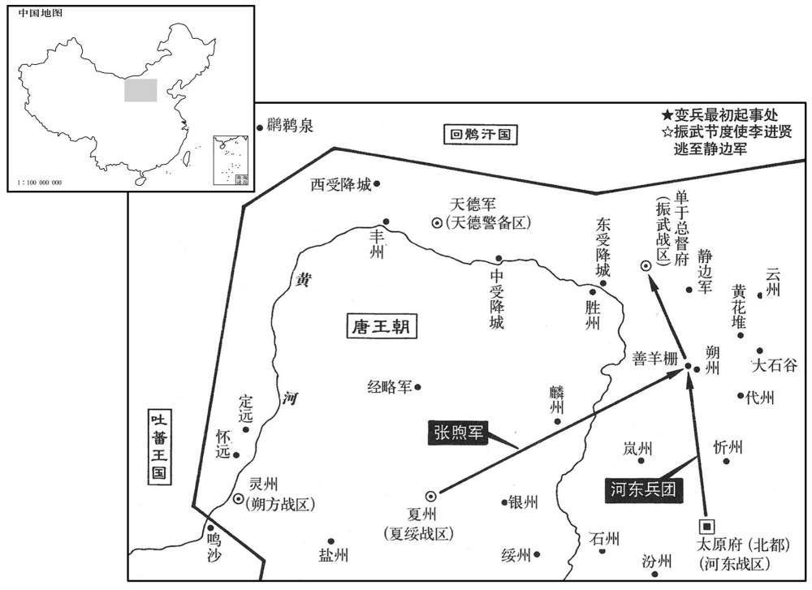
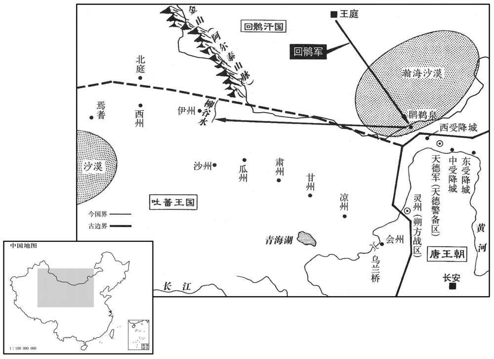

公元813年资治通鉴：本年记事、原文与白话对照
按原书编年位置阅读；追叙和史论不等于本年发生的事件。白话采用所据译本，缺译不以生成译文补齐。
卷239 · 本年记事
公元813年 · 唐宪宗昭文章武大圣至神孝皇帝元和八年
八年〔（癸巳、八一三）〕
上传原文的注释括号有异常，字符原样保留；无法可靠划分的段落默认全文显示。
本年事件索引（现代整理）

本年形势与背景参考图
春，正月，癸亥，以博州刺史田融为州刺史。〔融，兴之兄也。〕融、兴幼孤；融长，养而教之。〔兄弟皆幼失父母，而兄年差长，故长养其弟而教之。长，知丈翻。〕兴尝于军中角射，〔角，竞也。角射者，以中为胜。〕一军莫及。融退而抶之〔抶，丑栗翻，打也。〕曰：「尔不自晦，祸将及矣！」故兴能自全于猜暴之时。〔猜暴之时，谓田委安时也。
两版字句有差异，建议核对原文。
春季，正月，癸亥（初九），宪宗任命博州刺史田融为相州刺史。田融是田兴的哥哥。田融与田兴幼年丧父，田融年长，便抚养教育田兴。有一次，田兴与军中将士比赛射箭，全军将士都赶不上他。回去以后，田融用鞭子抽打他，还说：“你不能够收敛自己的锋芒，祸殃就要到来了！”所以，田兴能够在田季安猜疑而横暴时，将自己保全下来。
勃海定王元瑜卒，弟言义权知国务。庚午，以言义为勃海王。
勃海定王大元瑜去世，弟弟大言义暂时代理执掌国家事务。庚午（十六日），宪宗任命大言义为勃海王。
李吉甫、李绛数争论于上，前礼部尚书、同平章事权德舆居中无所可否；上鄙之。〔数，所角翻。〕辛未，德舆罢守本官。
李吉甫与李绛屡次在宪宗面前争论，礼部尚书、同平章事权德舆置身中间，没有表示过赞同或反对，宪宗因此而轻视他。辛未（十七日），权德舆被罢免宰相职务，仍然担任原有的官职。
辛卯，赐魏博节度使田兴名弘正。
辛卯（疑误），宪宗向魏博节度使田兴颁赐名字，叫田弘正。
司空、同平章事于拐久留长安，郁郁不得志。〔二年拐入朝，见二百三十二卷。〕有梁正言者，自言与枢密使梁守谦同宗，能为人属请，〔为，于伪翻；下同。属，之欲翻。〕拐使其子太常丞敏重赂正言，求出镇。久之，正言诈渐露，敏索其赂不得，〔索，山客翻。〕诱其奴，支解之，弃溷中。〔诱，音酉。溷，户困翻，厕也。〕事觉，拐帅其子殿中少监季友等素服诣建福门请罪，门者不内；〔帅，读曰率。唐大明宫端门曰丹凤门，其西曰建福门。，内即纳字也。〕退，负南墙而立，遣人上表，合门以无印引不受；〔唐制；凡四方章表，皆合门受而进之。拐方请罪，既无职印，又无内引，所以不受。〕日暮方归，明日，复至。〔复，扶又翻。〕丁酉，拐左授恩王傅，仍绝朝谒；〔朝，直遥翻。〕敏流雷州，〔旧志：雷州，至京师六千五百一十二里。〕季友等皆贬，官僮奴死者数人；敏至秦岭而死。〔自蓝田关南出度秦岭。〕
司空、同平章事于长时间留在长安，自觉忧闷，难偿平生志愿。有一个叫梁正言的人，自称与枢密使梁守谦是本家，能够替别人托办各种事情，于便让他的儿子太常丞于敏重重地贿赂梁正言，希图出任节度使。时间长了，梁正言的骗术逐渐败露了，于敏不能够将贿赂索取回来，便诱使梁正言的奴仆，将梁正言的四肢分解了，丢弃到厕所中。事情终于被发觉了，于带领他的儿子殿中少监于季友等人，穿着白色丧服前往建福门请求治罪，守门人不肯让他们进去。退下来后，于背倚南墙站立着，派人进献表章，阁门的值班人因表上没有印符，又没有内部人援引，因而不肯接受。直到日暮，于等才返回。第二天，又再次前来。丁酉（疑误），于被降职为恩王傅，并禁止他入朝谒见；于敏被流放雷州，于季友等人都被贬官，奴仆被处死的有几个人。于敏刚到秦岭便死去。
事连僧鉴虚。鉴虚自贞元以来，以财交权幸，受方镇赂遗，〔遗，唯季。〕厚自奉养，吏不敢诘。至是，权幸争为之言，上欲释之，中丞薛存诚不可。上遣中使诣台宣旨曰：「朕欲面诘此僧，非释之也。」存诚对曰：「陛下必欲面释此僧，请先杀臣，然后取之，不然，臣期不奉诏。」上嘉而从也。三月，丙辰，杖杀鉴虚，没其所有之财。〔考异曰：实录在二月。按长历，二月乙酉朔，三月甲寅朔。丙辰，三月三日。甲子，武元衡入佑政事，十一日也。实录脱不书月耳。
两版字句有差异，建议核对原文。
事情牵连到僧人鉴虚。自从贞元年间以来，鉴虚凭着资财与拥有权势、取得宠幸的人们交结，收受节度使贿赂的财物，使自己日常获得优厚的供养，吏人们谁也不敢追问。至此，有权势、得宠幸的人们争着替鉴虚讲情，宪宗也打算将鉴虚释放出来，御史中丞薛存诚认为是不适当的。宪宗派遣中使前往御史台宣布诏旨说：“朕打算当面责问这个僧人，并不是要释放他。”薛存诚回答说：“如果陛下一定要当面释放这个僧人，请先将我杀掉，然后再将他放走。否则，我定然不肯接受诏命。”宪宗嘉许并听从了他的请求。三月，丙辰（初三），将鉴虚用棍棒笞打而死，没收了他所有的资财。
甲子，征前西川节度使、同平章事武元衡入佑政事。〔元和二年，武元衡出镇西川，至是召还。〕
甲子（十一日），宪宗征召前任西川节度使、同平章事武元衡入朝执掌政事。
夏，六月，大水。上以为阴盈之象，辛丑，出宫人二百车。
夏季，六月，发生了严重的水灾，宪宗认为这是阴气满盈的象征。辛丑（初五），宪宗将二百车宫中妇女打发出宫。
秋，七月，〔【章：甲十一行本「月」下「有辛酉」二字；乙十一行本同；张校同；退斋校同。】〕振武节度使李光进请修受降城，兼理河防。〔理，治也。〕时受降城为河所毁，〔河毁受降城见上卷七年。〕李吉甫请徙其徒于天德故城，〔天德故城，在东受降城西二百里大同川。干元后，徙天德军于永济栅。宋白续通典作「永清栅」。其城，则隋大同城之旧墟。〕李绛及户部侍郎卢坦以为：「受降城，张仁愿所筑，〔事见二百九卷中宗景龙元年。〕当碛口，据虏要冲，美水草，守边之利地。今避河患，退二三里可矣，柰何舍万代永安之策，徇一时省费之便乎！况天德故城僻处确瘠，〔处，昌吕翻。确，克角翻，硗确也。瘠，土薄也。去河绝远，烽候警急不相应接，虏忽唐突，势无由知，是无故而蹙国二百里也。」及城使周怀义奏利害，与绛、坦同。上卒用吉甫策，〔卒，子恤翻。以受降城骑士隶天德军。李绛言于上曰：「边军徒有其数而无其实，虚费衣粮，将帅但缘私役使，〔缘私者，并缘公役之名而私使之。〕聚货财以结权幸而已，未尝训练以备不虞，此不可不于无事之时预象留圣意也。」时受降城兵籍旧四百人，及天德军交兵，此有五十人，〔考异曰：「实录云：「李光进请修东受降城兼理河防。」又云：「以中受降城及所管骑士一千一百四十人隶于天德军。」旧传：「卢坦与李绛謟议，以为西城张仁愿所筑，不可废。」三者不同，莫知孰是。今但云受降城，所关疑也。又李司空论事云：「中城旧属振武有镇兵四百人，其时割属天德，交割惟有五十人。」人数如此不同，或者一千一百四十人是三城都数耳。〕器械止有一弓，自余称是。〔称，尺证翻。〕故绛言及之。上惊曰：「边兵乃如是其虚邪！卿曹当加按阅。」会绛罢相而止。
本段缺少可靠对应白话，原文完整保留；未使用生成译文。
乙巳，废天威军，〔元和初，并左、右神威为一军，号天威军。神威军，本殿前射生军也。〕以其众隶神策军。
乙巳（疑误），朝廷废除了天威军，将天威军的部众隶属于神策军。
丁未，辰、溆贼帅张伯靖请降。〔辰、溆贼反，事始土卷六年。〕辛亥，〔【章：甲十一行本「辛」上有「九月」二字；乙十一行本同；孔本同；张校同。】〕以伯靖为归州司马，委荆南军前驱使。〔委，属也，付也。〕
丁未（疑误），辰州与涂州两地蛮人的首领张伯靖请求归降。辛亥（疑误），宪宗任命张伯靖为归州司马，交付荆南节度使军前听候驱遣。
初，吐蕃欲作乌兰桥，〔新志：会州乌兰县有乌兰关，在县西南。吐蕃于河上作桥。〕先贮材于河侧，〔贮，丁吕翻。〕朔方常潜遣人投之于河，终不能成。虏知朔方、灵盐节度使不佖贪，〔佖，支笔翻，又频笔翻。〕先厚赂之，然后并力成桥，仍筑月城守之。自是朔方御寇不暇。
当初，吐蕃准备建造乌兰桥，事先在黄河边上储存木材，朔方经常暗中派人将木材投入黄河，乌兰桥到底没有能够造成。吐蕃得知朔方、灵盐节度使王贪婪，便先去重重地贿赂他，然后全力将乌兰桥造成，还修筑了新月形的城墙守卫着它。从此，朔方经常需要抵御吐蕃入侵，再也没有闲暇的时候了。
冬，十月，回鹘发兵度碛南，自柳谷西击吐蕃。〔新志：西州交河县北二百一十里，经柳谷渡。〕壬寅振武、天德军奏回鹘数千骑至鷿鹈泉，〔鷿鹈泉，在西受降城北三百里。鷿，扶历翻。鹈，徒奚翻。〕边军戒严。
冬季，十月，回鹘派兵来到大漠南面，由柳谷西进，攻击吐蕃。壬寅（二十三日），振武、天德军奏称有回鹘骑兵数千人来到鹈泉，边疆上的军队都在警戒防备。

振武节度使李进贤，不恤士卒；判官严澈，绶之子也，〔于时严绶尚在。绶，音受。〕以刻核得幸于进贤。进贤使牙将杨遵宪将五百骑趣东受降城以备回鹘，所给资装多虚估；〔资装不给本色，虚估其价，给以他物。趣，七喻翻。〕至鸣沙，遵宪屋处〔处，昌吕翻。〕而士卒暴露；众发，夜，聚薪环其屋而焚之，〔环，音宦。〕卷甲而还。〔还，从宣翻，又如字。〕庚寅夜，焚门，攻进贤，进贤踰城走，军士屠其家，并杀严澈。进贤奔静边军。〔静边军在云州西一百八十里。〕
振武节度使李进贤不体恤将士。判官严澈是严绶的儿子，因待人苛刻而得到李进贤的宠爱。李进贤让牙将杨遵宪带领骑兵五百人奔赴东受降城，防备回鹘，供给他的物资装备多不是原物，而是经过虚估价钱后另以他物配给的。来到鸣沙时，杨遵宪住在房屋里，但将士们留在露天地里。大家发怒了，在夜间堆聚柴草，围绕着房屋放火焚烧杨遵宪，收起铠甲，返回振武。庚寅（十一日），夜晚，返回的将士焚烧大门，进攻李进贤，李进贤翻越城墙逃走。将士们屠杀了李进贤的家口，并且杀死了严澈。李进贤逃奔静边军。
群臣累表请立德妃郭氏为皇后。一以妃门宗强盛，〔妃，郭暧之女，子仪之孙女也。〕死正位之后，后宫莫得进，托以岁时禁忌，竟不许。
群臣屡次上表请求将德妃郭氏立为皇后。宪宗认为郭德妃宗族门户强盛，恐怕郭德妃居正位后，内宫的嫔妃不能够接近他了，便借口时日的忌讳，始终不肯答应。
丁酉，振武监军骆朝宽奏乱兵已定，请给将士衣。上恋，以夏绥节度使张煦为振武节度使，〔煦，吁句翻。〕将夏州兵二千赴镇，仍命河东节度使王锷以兵二千纳之，听以便直从事。骆朝宽归罪于其将苏若方杀之。
丁酉（十八日），振武监军骆朝宽奏称变乱的士兵已经平定，请求给将士们供应服装。宪宗大怒，任命夏绥节度使张煦为振武节度使，带领夏州兵马二千人奔赴振武，还命令河东节度使王锷率领兵马二千人接纳张煦，任凭他见机行事。骆朝宽将罪责都加给将领苏若方，将他杀掉了。
发郑滑、魏专卒凿黎阳古河十四里，以纾滑州水患。〔大河故渎径黎阳山之东，后南徙，为滑州患，故复凿古河。〕
朝廷征发郑滑、魏博士兵开凿黎阳古黄河河道十四里，以便缓解滑州的水灾。
上问宰相：「人言外间朋党大盛，何也﹖」李绛对曰：自古人君所甚恶者，莫若人臣为朋党，故小人谮君子必曰朋党。何则﹖朋党言之则可恶，〔恶，乌路翻。〕寻之则无迹故也。东汉之末，凡天下贤人君子，官官皆谓之党人而禁锢之，遂以亡国。〔见汉桓、灵二帝纪。〕此皆群小欲害善人之言，愿陛下深之！夫君子固与君子合，岂可必使之与小人合，然后谓之非党邪！」
宪宗询问宰相说：“人们说外面朋党集团大大兴起，这是为什么呢？”李绛回答说：“自古以来，人君特别憎恶的，以人臣结成朋党集团为甚，所以，小人诬陷君子，肯定要说他属于朋党集团。为什么要这样做呢？这是因为，朋党集团谈论起来虽然是可恶的，寻找起来却没有痕迹。东汉末年，凡是天下的贤人和君子，宦官都称他们为党人，因而勒令对他们永不任用，东汉便因此灭亡。这都是众小人打算谋害好人的说法，希望陛下深入地考察此事。一般说来，君子固然与君子相合，难道能够一定使君子与小人相合，然后才能够说君子不属于朋党集团吗！”
译本中未与胡注本可靠对应的内容
以下另列供核对版本差异，不并入胡注本正文。
译本所附古文
[8]秋，七月，振武节度使李光进请修受降城，兼理河防。时受降城为河所毁，李吉甫请徒其徒于天德故城，李绛及户部待郎卢坦以为：“受降城，张仁愿所筑，当碛口，据虏要冲，美水草，守边之利地。今避河患，退二三里可矣，奈何舍万代永安之策，徇一时省费之便乎！况天德故城僻处确瘠，去河绝远，烽侯警急不相应接，虏忽唐突，势无由知，是无故而蹙国二百里也。”及城使周怀义奏利害，与绛、坦同。上卒用吉甫策，以受降城骑士隶天德军。
译本白话
秋季，七月，振武节度使李光进请求修筑受降城，同时治理黄河的堤防。当时，受降城被黄河毁坏，李吉甫请求将李光进的部众迁移到天德军的旧城去。李绛与户部侍郎卢坦认为：“这座受降城是张仁愿修筑起来的，地处大漠的出口，占据着控制异族的交通紧要之地，水草丰美，是守卫边防的好地方。现在，为了避开黄河的危害，后退两三里地就行了，怎么能够舍弃万世永远安定的大计，曲从暂时节省开支的便利呢！何况天德军旧城处于荒远之地，土质瘠薄多石，距离黄河极远，烽火台示警告急时，不能够相互呼应，异族忽然前来横冲直撞，势必无法得知，这是毫无原由地使国家减缩了二百里的土地啊！”及至受降城使周怀义奏陈利弊得失，所讲的与李绛、卢坦相同。但是，宪宗最终还是采用了李吉甫的策划，将受降城的骑兵隶属于天德军。
李绛言于上曰：“边军徒有其数而无其实，虚费衣粮，将帅但缘私役使，聚货财以结权幸而已，未尝训练以备不虞，此不可不于无事之时豫留圣意也。”时受降城兵籍旧四百人，及天德军交兵，止有五十人，器械止有一弓，自余称是。故绛言及之。上惊曰：“边兵乃如是其虚邪！卿曹当加按阅。”会绛罢相而止。
李绛对宪宗说：“边防上的军队空有数额，实际没有那么多士兵，白白浪费衣服与口粮。将帅们只知道假公济私，使唤士兵，积聚物资钱财，用以交结有权势、得宠幸的人们，却不曾训练士兵，以防备意外的事情发生。这种情形，不能不在没有事端时请陛下预先留意。”当时，受降城的士兵名册原有四百人，及至与天德军移交兵员时，只有五十人，军用器具只有一张弓，其余的东西与此相称，所以李绛才提到此事。宪宗惊讶地说：“边境的兵马竟然是这般空虚吗！你们应当加以按察。”适逢李绛被罢免了宰相的职务，于是此事便作罢了。